new experiment:
- For a new set of experiments open a new file. The file should contain
the following files: cal: for calibration, parameters, img and res
a clean file for example (copy it and rename the file) is in ptv/fresh_test .
Calibration:
- The cal file contains: 4 calibration pictures, one for each camera, 4
ori files (orientaion files), and a calblock.txt file.
- The calblock.txt file contains the coordinates of each dot on the
calibration target in x,y and z . calblock_20.txt is for 20 dots, it can be changed to any number of dots, according to the calibration target and the calibration pictures.
- Ori files: camera’s orientation files:
The first 9 parameters are the coordinates of the camera with respect to the reference calibration target and the camera angles:
First row: distance. Second row: the angle [radian].
First column :x. Second column: y. Third column: z.
3x3 matrix: rotation matrix
2 parameters: Xp and Yp of the pinhole
focal distance: if we have a ratio of world image to chip image of 500mm to 65 mm( 384pixels is17microns), e.g. 1:8. The distance from lens to calibration target is about 800mm. Hence the focal distance is about 100mm.
3 parameters: the position of the glass according to the zero point.
In the first run- choose reasonable parameters according to the cameras positions in the experiment.
- Gain 4 calibration pictures, one for each camera, and copy them to the
cal file.
- right click on the current run. choose calibration parameters:
Image data:
Fill in the name of the four calibration pictures ,four orientation data pictures and file of coordinates on plate.
[h] 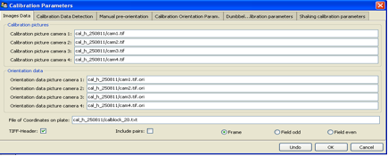
Calibration data detection:
Different parameters in order to detect the dots on the calibration target.
[h] 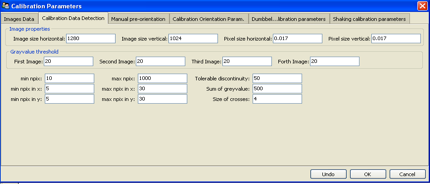
Manual pre-orientation:
Fill in the numbers of four points on the calibration target. The numbers should be set as chosen in manual orientation.
[h] 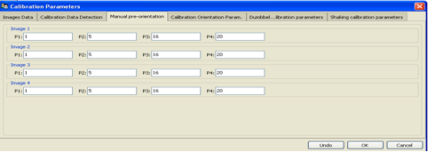
Calibration orientation parameters:
The lens distortion is modeled with up to five parameters :k1,k2,k3+ p1,p2
Affin transformation: scx, she
Principle distance: xp, yp
In the first calibration process don’t mark those parameters. After establishing the calibration, the different parameters can be marked in order to improve the calibration.
[h] 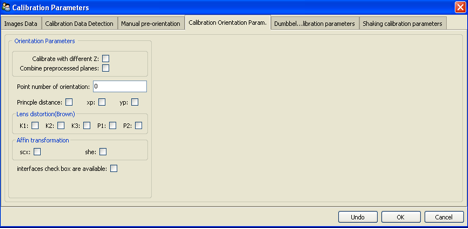
- In the upper toolbar choose : calibration and create calibration
load/show images: shows the calibration images
detection: detect the calibration dots on the calibration image. check that all the dots were identified correctly and marked in blue, and that there aren’t any extra dots.
mark the four points from the manual pre-orientation in each camera and press manual orient. This creates the man_ori.dat. Next time, skip this stage and press detection and then orient with file.
show initial guess: The yellow dots show where the dots from the calibration plane would end up on your images if the initial guess would be correct.
If the yellow dots aren’t in the right location, change the ori files - edit ori files and press show initial guess again to see the change, do it until the yellow and blue dots match.
Check that the position of each camera according to the ori files is also reasonable according to the cameras position in reality.
sort grid: situates all the dots in their positions. Check that all dots were found and marked correctly.
orientation: creates the orientation.
In order to improve the orientation : mark some of the Calibration orientation parameters and press orientation again.
Dumbbell calibration:
Sometimes it is inconvenient to position a calibration target. Either because there is something in the way, or because it is cumbersome to get the entire target again out of the observation domain. It would be much easier to move a simple object randomly around the observation domain and from this perform the calibration.
This is what ``\ Dumbbell calibration\ `` is doing. The simple object is a dumbbell with two points separated at a known distance. A very rough initial guess is sufficient to solve the correspondence problem for only two particles per image. In other words, the tolerable epipolar band width is very large: large enough to also find the correspondence for a very rough calibration, but small enough so as not to mix up the two points. From there on, calibration optimizes the distances by which the epipolar lines miss each other, while maintaining the detected distance of the dumbbell points.
Unlike previous calibration approaches, Dumbbell calibration uses all camera views simultaneously. [RequiredHinput]
Required input
[h] 
Somehow, an object with two well visible points has to be moved through the observation domain and recorder. The dumbbells points should be separated by roughly a third of the observation scale.
Note that the accuracy by which these dumbbell points can be determined in 2d, also defines the possible accuracy in 3d.
Processing:
- Copy at least 500 images of the dumbbell (for each camera) as a tiff
file to a new file Prepare target files using matlab code: tau_dumbbell_detection_db_v3b .Every target file should contain only 2 points.
- Right click on the current run: choose main parameters.
Main parameters:
write the name of the first dumbbell image, and the name of the calibration images you want to use.
[h] 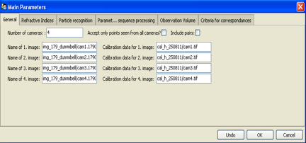
Particle recognition:
since there are ready target files, mark ``\ use existing\_target\_files\ ``.
[h] 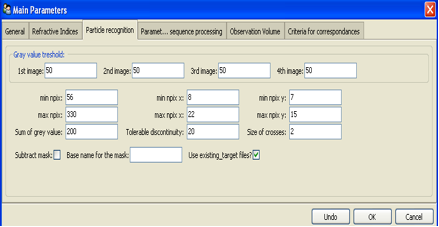
Sequence processing:
Fill in the numbers of the first and last picture in the sequence processing, and the base name for every camera.
[h] 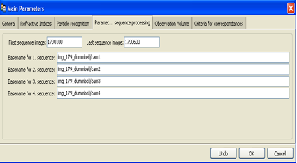
Criteria for correspondences:
min corr for ratio nx:
min corr for ratio ny:
min corr for ratio npix:
sum of gv:
min for weighted correlation:
tol band: The number that defines the distance from the epipolar line to the possible candidate [mm].
[h] 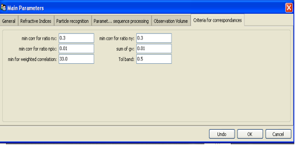
*Processing of a single time step: *
- In the upper toolbar choose: start and then pre-tracking ,image
coordinate, after that the two points of the dumbbell are detected. Then choose pre-tacking, correspondence. This establish correspondences between the detected dumbbell from one camera to all other cameras
- you can press one point of the dumbbell in each camera and to see the
epipolar lines.
The processing of a single time step is necessary to adjust parameters like grey value thresholds or tolerance to the epipolar line.
[h] 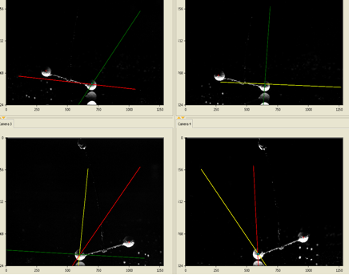
- In the upper toolbar choose: sequence, sequence without display
- In the upper toolbar choose: tracking, detected particles. Then
tracking, tracking without display and then show trajectory.
- Right click on the current run. choose calibration parameters:
Dumbbell calibration parameters:
[h] 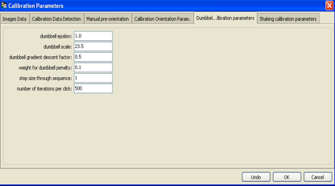
Eps [mm]: It is the tolerable bandwith by which epipolar lines are allowed to miss each other during calibration. should be the same number as the tol. band in ``\ Criteria for correspondences\ ``
Dumbbell scale [mm] :distance between the dumbbell points. It is quite important Since the algorithm optimizes two targets, the epipolar mismatch and the scale of the dumbbell particle pair.
Gradient descent factor: if everything would be linear then a factor of 1 would converge after one step. Generally one is a bit instable though, so a more careful, but slow, value is 0.5.
Weight for dumbbell penalty: this is the relative weight that is given to the dumbbell scale penalty. with one it is equally bad to have dumbbell scale of only 24mm and to have epipolar mismatch of 1mm. After rough converge this value can be reduced to 0.01-0.2, since it is difficult to precisely even measure this scale.
Step size through sequence: it is step size. It could be different then 1 when the dumbbell recording is very long with successive images that are almost identical, then step size of 10 or so might be more appropriate.
- In the upper toolbar choose : calibration and create calibration.
choose orient with dumbbell.
*Shaking calibration: *
[h] 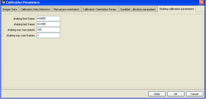
Processing of a single time step
Main parameters:
Write the name of the first image, and the name of the calibration images you want to use.
[h] 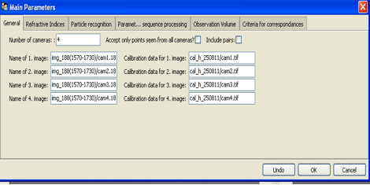
Particle recognition:
Don’t mark ``\ use existing\_target\_files\ ``. fill the particle recognition parameters in order to find the particles.
[h] 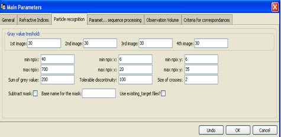
- Press start in the upper toolbar. the four picture images from
``\ main parameters, general\ `` will appear.
[h] 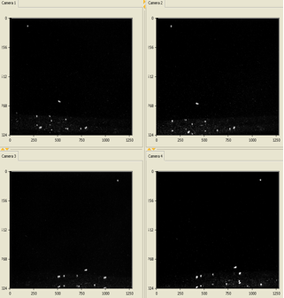
- Under Pretracking the processing of a single time step regularly
starts with the application of a highpass filtering (Highpass). After that the particles are detected (Image Coord) and the* *position of each particle is determined with a weighted grey value operator. The next step is to establish correspondences between the detected particles from one camera to all other cameras (Correspondences).
[h] 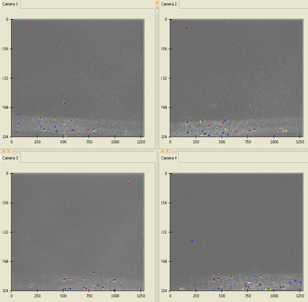
The processing of a single time step is necessary to adjust parameters like grey value thresholds or tolerance to the epipolar line.
Sequence:
After having optimized the parameters for a single time step the processing of the whole image sequence can be performed under Sequence .
- Under main parameters, Sequence processing* *Fill in the numbers
of the first and last picture in the sequence processing, and the base name for every camera.
- In the upper toolbar choose sequence with or without display of the
currently processed image data. It is not advisable to use the display option when long image sequences are processed. The display of detected particle positions and the established links can be very time consuming.
For each time step the detected image coordinates and the 3D coordinates are written to files,
which are later used as input data for the Tracking procedure.
*Tracking: *
Tracking parameters:
Before the tracking can be performed several parameters defining the velocity, acceleration and direction divergence of the particles have to be set in the submenu Tracking Parameters. The flag‘
Add new particles position’ is essential to benefit from the capabilities of the
enhanced method. To derive a velocity field from the observed flow.
[h] 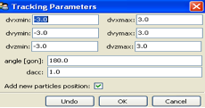
- Tracking, Detected Particles displays the detected particles from the
sequence processing.
[h] 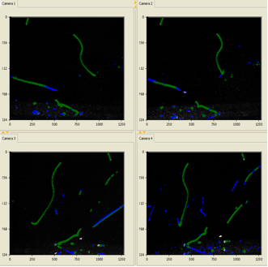
- Choose tracking, tracking without display. Again it is not advisable
to use the display option if long sequences are processed. The tracking procedure allows bidirectional tracking.
- Tracking, show Trajectories displays the reconstructed trajectories in
all image display windows.
[h] 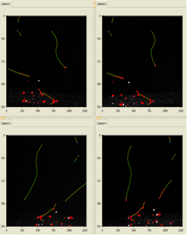